What we did, what's left한 일, 남은 일
Done Oct 20 to 2110월 20~21일 완료
- In review리뷰 중UI audit of the live app74 issues (15 high), each with screenshots, the rule and a fix라이브 앱 UI 감사이슈 74개 (높음 15개), 스크린샷·근거·수정안 포함Report
- In review리뷰 중PR #215 demo polishchat AI label, bubbles, owner Home tiles, og-image, loading screenPR #215 데모 다듬기채팅 AI 라벨, 말풍선, 오너 홈 타일, og 이미지, 로딩 화면PR
- In review리뷰 중Needs UI updatesUI 수정 필요Judge panel (B) playable, on the Overview page; C goes in the video심사위원 패널(B) 플레이 가능, 개요 페이지에 통합; C는 영상으로Judge panel Video plan
- Done완료Pixel pet presets #1844 coats × 5 moods, pushed as a branch
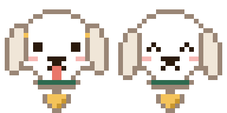
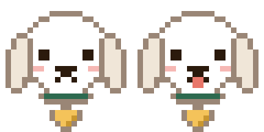
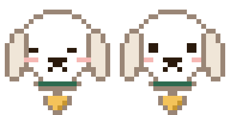
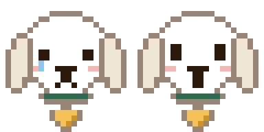
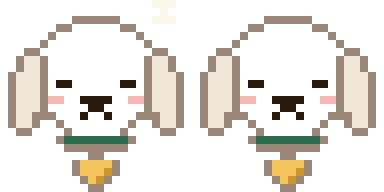
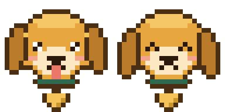
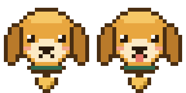
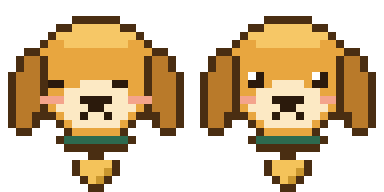
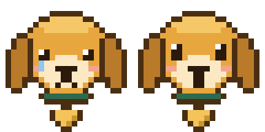
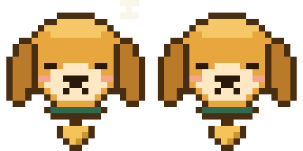
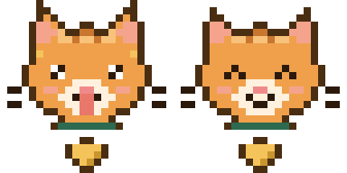
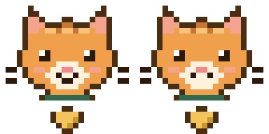
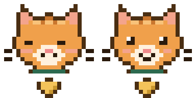
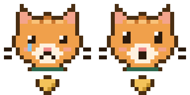
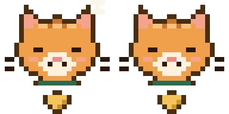
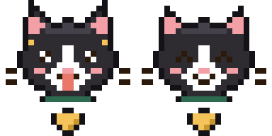
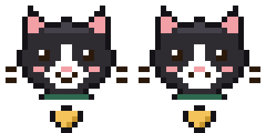
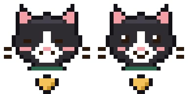
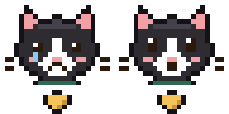
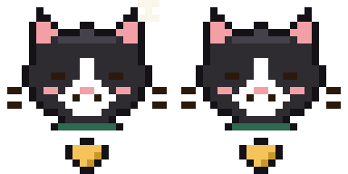
픽셀 펫 프리셋 #184털색 4종 × 기분 5종, 브랜치 푸시Branch - Done완료README sections: where the AI can be wrong, accessibilityREADME 섹션: AI가 틀릴 수 있는 곳, 접근성Branch
- In review리뷰 중Needs UI updatesUI 수정 필요#116 video shot list and the demo run sheet#116 영상 샷 리스트와 데모 진행표Shot list Run sheet
- Done완료#115 onboarding hand-off posted#115 온보딩 핸드오프 게시#115
To do 10/21할 일 10/21
- Waiting대기Audit fixes, first batchone header style, focus ring, placeholder contrast감사 수정 1차헤더 통일, 포커스 링, 플레이스홀더 대비Report
- Waiting대기Judge-facing fixestour placeholders, Try demo, split view, hide team tools심사위원 첫인상 수정투어 플레이스홀더, 데모 체험, 분할 화면, 팀 도구 숨김
- Waiting대기PR #215 rebase onto main (conflicts) so CI runsPR #215 리베이스 (충돌 해결) 후 CI 실행PR
- Waiting대기Open PRs for the pixel-pet and README branches픽셀 펫·README 브랜치 PR 열기
- Waiting대기Tamagotchi rooms A/B/C, after OK to download the Kenney packs다마고치 방 A/B/C, Kenney 팩 다운로드 승인 후Pixel tools
- Waiting대기Demo stay seed: sitter has no bookings, stages ② to ⑤ are empty (Minsik)데모 숙박 시드: 시터 예약 없음, ②~⑤ 단계 비어 있음 (민식)